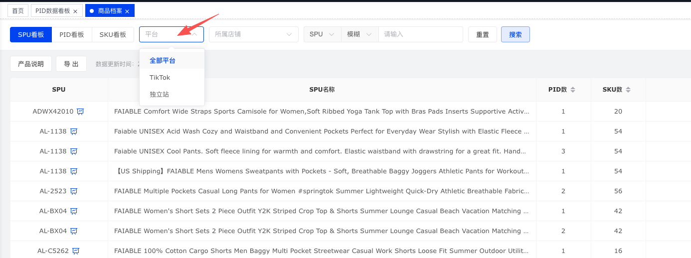

用于记录管理模块前后端联调过程中的问题、调整点和对接时间，方便后续复盘接口口径、页面展示和数据链路。
| 模块 / 页面 | 问题 | 调整点 | 对接时间 | 状态 | 备注 |
|---|---|---|---|---|---|
| 商品档案 | 商品档案模块顶部筛选区需要移除“平台”选项，不再展示全部平台 / TikTok / 独立站下拉。 | 已移除商品档案原型中的平台筛选控件，并同步删除前端过滤、重置和事件绑定中的 platformFilter 相关逻辑。 | 2026-07-22 | 已调整 | 已同步更新商品档案需求文档，不再描述支持平台筛选。
 |
| 通用 / 店铺筛选 | 如果页面存在店铺筛选或店铺选择项，需要默认选择第一个店铺，避免进入页面时处于空店铺或全部店铺状态。 | 待确认涉及页面清单，并统一调整初始化逻辑：有店铺列表时默认取第一个店铺作为当前选中值。 | 2026-07-22 | 待对接 | 待补充 |
| 通用 / 所属店铺 | 关于所属店铺，需要增加一个接口，为页面店铺筛选或店铺选择项提供统一店铺列表数据。 | 待后端提供所属店铺列表接口，前端统一从接口加载店铺选项；后续与“默认选择第一个店铺”逻辑联动。 | 2026-07-22 | 待对接 | 待补充 |
| 商品档案 | PID 看板和 SKU 看板需要增加筛选条件：TK审核状态。 | 已新增 TK审核状态下拉筛选，并在 PID / SKU 看板中按 audit 字段过滤；SPU 看板默认隐藏该筛选项。 | 2026-07-22 | 已调整 | 已同步更新商品档案需求文档。 |
| 商品档案 | SKU 看板需要移除“产品主 SKU”字段展示。 | 已移除 SKU 看板表头和行数据中的产品主 SKU 列，并同步调整空数据占位列数。 | 2026-07-22 | 已调整 | PID 看板及编辑抽屉中的产品主 SKU 暂保持不变。 |
| 商品档案 / PID 看板 | PID 看板不需要编辑功能，当前行尾展示编辑入口，容易让用户误以为 PID 维度字段支持维护。 | 待确认仅移除 PID 看板主表的编辑入口，还是同步移除 PID 展开明细中的编辑入口；SKU 看板编辑能力暂按现状保留。 | 2026-07-22 | 待对接 | 待补充 |
| 账号档案 | 账号档案中的 Shop Code 参数需要保留，前面“移除 Shop Code”的要求作废。 | 如页面或接口已移除 Shop Code，需要还原对应字段、筛选项、编辑表单、导入导出字段和接口参数；未改动的位置保持现状。 | 2026-07-22 | 待对接 | 以本条为准：Shop Code 参数需要保留。 |